现代卷积神经网络(1)-基础
卷积神经网络
基本介绍
到目前为止，我们处理这类结构丰富的数据的方式还不够有效仅仅通过将图像数据展平成一维向量而忽略了每个图像的空间结构信息，再将数据送入一个全连接的多层感知机中。 因为这些网络特征元素的顺序是不变的，因此最优的结果是利用先验知识，即利用相近像素之间的相互关联性，从图像数据中学习得到有效的模型。
卷积神经网络（convolutional neural network，CNN）是一类强大的、为处理图像数据而设计的神经网络。现代卷积神经网络的设计得益于生物学、群论和一系列的补充实验。 卷积神经网络需要的参数少于全连接架构的网络，而且卷积也很容易用GPU并行计算。
图像中本就拥有丰富的结构，而这些结构可以被人类和机器学习模型使用卷积神经网络正是将空间不变性（spatial invariance）的这一概念系统化，从而基于这个模型使用较少的参数来学习有用的表示。
适合于计算机视觉的神经网络架构：
- 平移不变性（translation invariance）：不管检测对象出现在图像中的哪个位置，神经网络的前面几层应该对相同的图像区域具有相似的反应，即为“平移不变性”。
- 局部性（locality）：神经网络的前面几层应该只探索输入图像中的局部区域，而不过度在意图像中相隔较远区域的关系，这就是“局部性”原则。最终，可以聚合这些局部特征，以在整个图像级别进行预测。
- 图像的平移不变性使我们以相同的方式处理局部图像，而不在乎它的位置。
- 局部性意味着计算相应的隐藏表示只需一小部分局部图像像素。
- 在图像处理中，卷积层通常比全连接层需要更少的参数，但依旧获得高效用的模型。
- 卷积神经网络（CNN）是一类特殊的神经网络，它可以包含多个卷积层。
- 多个输入和输出通道使模型在每个空间位置可以获取图像的多方面特征。
卷积层中的两个被训练的参数是卷积核权重和标量偏置。
nn.Conv2d
torch.nn.Conv2d(in_channels, out_channels, kernel_size, stride=1, padding=0, dilation=1, groups=1, bias=True, padding_mode='zeros', device=None, dtype=None)
| 参数 | 参数类型 | ||
|---|---|---|---|
in_channels |
int | Number of channels in the input image | 输入图像通道数 |
out_channels |
int | Number of channels produced by the convolution | 卷积产生的通道数 |
kernel_size |
(int or tuple) | Size of the convolving kernel | 卷积核尺寸，可以设为1个int型数或者一个(int, int)型的元组。例如(2,3)是高2宽3卷积核 |
stride |
(int or tuple, optional) | Stride of the convolution. Default: 1 | 卷积步长，默认为1。可以设为1个int型数或者一个(int, int)型的元组。 |
padding |
(int or tuple, optional) | Zero-padding added to both sides of the input. Default: 0 | 填充操作，控制padding_mode的数目。 |
padding_mode |
(string, optional) | ‘zeros’, ‘reflect’, ‘replicate’ or ‘circular’. Default: ‘zeros’ | padding模式，默认为用0填充。 |
dilation |
(int or tuple, optional) | Spacing between kernel elements. Default: 1 | 扩张操作：控制kernel点（卷积核点）的间距，默认值:1。 |
groups |
(int, optional) | Number of blocked connections from input channels to output channels. Default: 1 | group参数的作用是控制分组卷积，默认不分组，为1组。 |
bias |
(bool, optional) | If True, adds a learnable bias to the output. Default: True | 为真，则在输出中添加一个可学习的偏差。默认：True。 |
可以通过实例名.weight和实例名.bias来查看卷积层的权重和偏置，
the output value of the layer with input size and output can be precisely described as:
- Input: or
- Output: or ,
填充与步幅
在应用多层卷积时，我们常常丢失边缘像素。 由于我们通常使用小卷积核，因此对于任何单个卷积，我们可能只会丢失几个像素。 但随着我们应用许多连续卷积层，累积丢失的像素数就多了。 解决这个问题的简单方法即为填充（padding）：在输入图像的边界填充元素（通常填充元素是0）
通常，如果我们添加行填充（大约一半在顶部，一半在底部）和列填充（左侧大约一半，右侧一半）
在许多情况下，我们需要设置和(是卷积核的高与宽），使输入和输出具有相同的高度和宽度。 这样可以在构建网络时更容易地预测每个图层的输出形状。
卷积神经网络中卷积核的高度和宽度通常为奇数，例如1、3、5或7。 选择奇数的好处是，保持空间维度的同时，我们可以在顶部和底部填充相同数量的行，在左侧和右侧填充相同数量的列。
1 | conv2d = nn.Conv2d(1, 1, kernel_size=3, padding=1) |
步幅一般默认为1，这个不用多讲，也可以分别设置高宽的步幅
多输入多输出通道
torch.nn.Conv2d(in_channels, out_channels）自带多输入多输出通道，不用单独写函数
输入的通道数为in_channels，那么卷积核的输入通道数也需要为in_channels
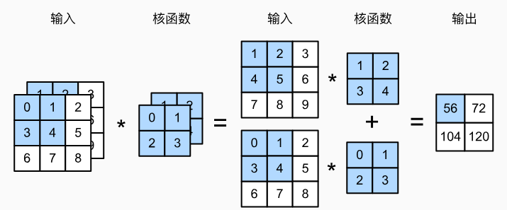
多输出通道相当于有out_channels组卷积核，一组有in_channels个卷积核（或者说有out_channels个卷积核，每个卷积核的通道数为in_channels，即torch.size([out_channels, in_channels, kernel_h, kernel_w])
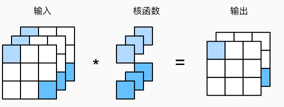
注意输出的每个通道的元素值也是相加得到的
1×1 卷积层
1×1卷积，看起来似乎没有多大意义。 毕竟，卷积的本质是有效提取相邻像素间的相关特征，而1×1卷积显然没有此作用。 尽管如此，1×1仍然十分流行，经常包含在复杂深层网络的设计中。
因为使用了最小窗口，1×1卷积失去了卷积层的特有能力——在高度和宽度维度上，识别相邻元素间相互作用的能力。
这里输入和输出具有相同的高度和宽度，输出中的每个元素都是从输入图像中同一位置的元素的线性组合。 我们可以将1×1卷积层看作在每个像素位置应用的全连接层，以ci个输入值转换为co个输出值。 因为这仍然是一个卷积层，所以跨像素的权重是一致的。
- 当以每像素为基础应用时，1×1卷积层相当于全连接层。
- 1×1卷积层通常用于调整网络层的通道数量和控制模型复杂性。
- 1×1卷积层，或作为在每个像素位置上独立作用的全连接层。 可以看作将空间维度中的每个像素视为单个样本，将通道维度视为不同特征（feature）。
卷积核的shape
1 | conv = nn.Conv2d(in_channels=6, out_channels=3, kernel_size=1, groups=1) |
膨胀卷积
空洞卷积，是在标准的卷积核中注入空洞，以此来增加模型的感受野（reception field）。相比原来的正常卷积操作，扩张卷积多了一个参数： dilation rate，指的是卷积核的点的间隔数量，
一般情况下对于一个图像分类任务，一个靠Conv和Pooling堆叠起来的backbone都是具有不错的特征提取能力的，这种堆叠最经典的就是结构就是VGG。在图像输出网络后，Conv做特征的抽取，而Pooling做特征的聚合，并且让模型具有一定程度上的平移不变性，还可以降低后面卷积层的算力。最后到全连接层输出分类结果就好了。
但是这种结构对目标检测和图像分割来说，就会存在一些问题
- 目标检测和图像分割中感受野很重要，比如目标检测一般情况下要在最后一层特征图上做预测，那么特征图上的一个点能过映射到原图的多少像素，决定了网络能检测到的尺寸上限，而保证感受野就要靠下采样，下采样的结果就是小目标不容易被检测到；
- 针对上面的问题，多层特征图拉取分支能改善这个问题，因为小目标在越靠前的特征图上越容易体现，但是前面的特征图语义信息不够，比如在SSD中就存在这个问题；
- 不做下采样，只增加卷积层的数量，首先会增大网络的计算量，其次不做Pooling的聚合最后的特征提取效果也会受到影响，而且感受野不会变化。所以有没有一种可以不牺牲特征图尺寸的情况下增加感受野的方式呢？扩张卷积就能做到这点。
dilation操作动图演示如下：扩张卷积核为3×3，扩张率为2
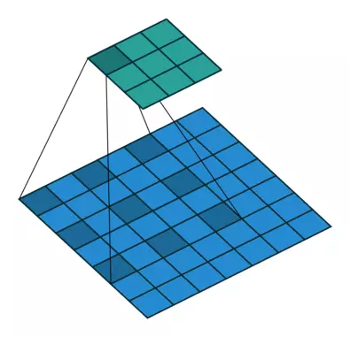
可以看到相当于卷积核变大了，感受野也变大了，但是输出的特征图(feature map ,也叫特征映射）依旧是3*3的
存在的问题：
扩张卷积虽然在不损失特征图尺寸的情况下增大了感受野，但是也会带来新的问题，主要是体现在卷积的输入，由于卷积核是有间隔的，这意味着不是所有的输入都参与计算，整体特征图上体现出一种卷积中心点的不连续，尤其是当叠加的卷积层都是用相同的dilation rate的时候：
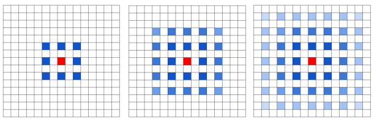
上图中示例是三个dilation rate=2扩张卷积层连续卷积后的结果，蓝色的标识是参与计算的卷积中心，而颜色的深度表征次数。可以看到，由于3次的dilation rate是一致的额，所以卷积的计算中心会呈现出一种网格状向外扩展，有一些点不会成为计算的中心点。
解决这个问题最直接的方法当然就是不使用连续的dilation rate相同的扩展卷积，但是这还不够，因为如果dilation rate是成倍数的，那么问题还是存在。所以最好的方式是将连续排布的扩张卷积的dilation rate设置为“锯齿状”，比如分别是[1，2，3]，那么卷积中心的分布就会变成下面这样，不在有遗漏的情况。
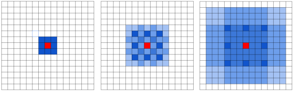
分组卷积
【Pytorch】一文搞懂nn.Conv2d的groups参数的作用_nn.conv2d groups-CSDN博客
将输入和输出的通道（channel）进行分组，每一组单独进行卷积操作，然后再把结果拼接（concat）起来。比如输入大小为 (1, 4, 5, 5)，输出大小为(1, 8, 5, 5)，groups=2。就是将输入的4个channel分成2个2的channel，输出的8个channel分成2个4的channel，每个输入的2个channel和输出的4个channel组成一组，每组做完卷积后的输出大小为(1, 4, 5, 5)。然后把得到的两组输出在channel这个维度上进行concat，得到最后的输出维度为 (1, 8, 5, 5)。
我们假设输入tensor的shape为 (1, 4, 5, 5)，输出tensor的shape为： (1, 8, 5, 5)，即我们的卷积核有8个。下面的图由于 batch_size=1，所以省略的batch_size的维度。
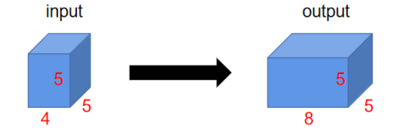
这里我们手动设置卷积核中元素的值，前4个卷积核的值都设置为1，后4个卷积核的值都设置为2
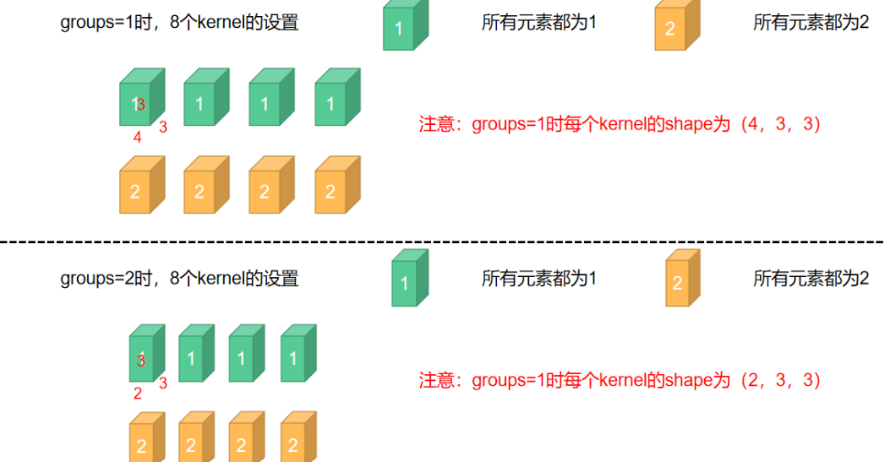
groups=1时kernel_size=(4, 3, 3)，groups=2时k kernel_size=(2, 3, 3)：因为groups=2时，输入和输出都被分成了两组，输入的shape原来为：(4, 5, 5)，被分成了两个 (2, 5, 5)，所以每个kernel_size也由(4, 3, 3)变为(2, 3, 3)
groups=1
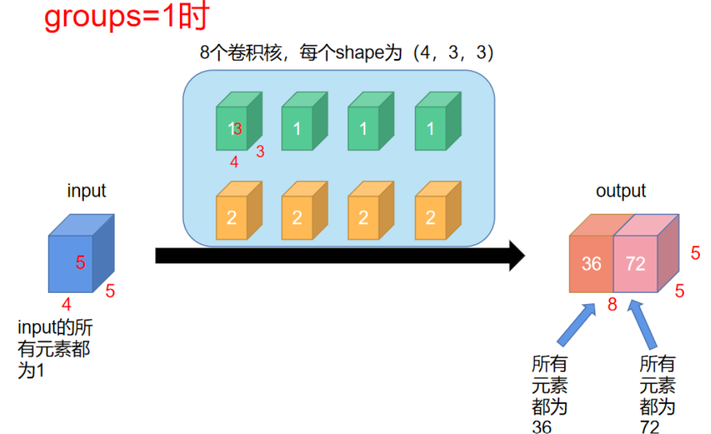
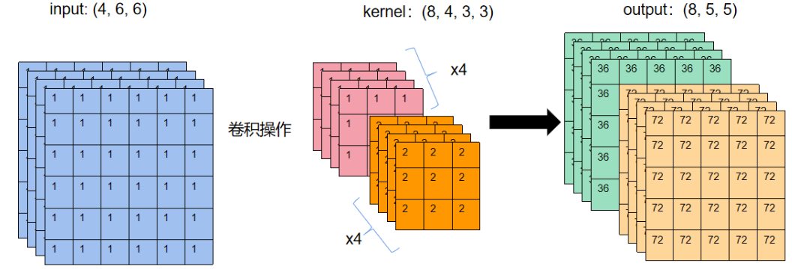
groups=2
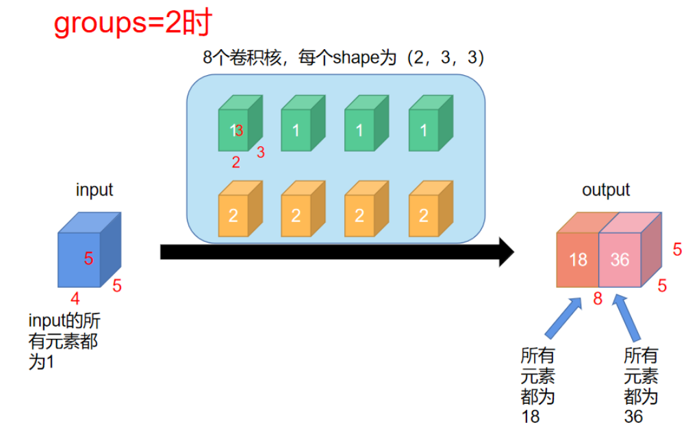
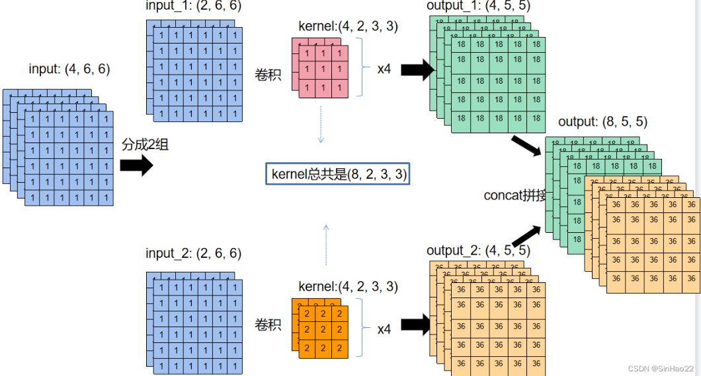
注意groups要能被in_channels, out_channels整除
汇聚层
通常当我们处理图像时，我们希望逐渐降低隐藏表示的空间分辨率、聚集信息，这样随着我们在神经网络中层叠的上升，每个神经元对其敏感的感受野（输入）就越大。
而我们的机器学习任务通常会跟全局图像的问题有关（例如，“图像是否包含一只猫呢？”），所以我们最后一层的神经元应该对整个输入的全局敏感。通过逐渐聚合信息，生成越来越粗糙的映射，最终实现学习全局表示的目标，同时将卷积图层的所有优势保留在中间层。
汇聚（pooling）层的双重目的：
- 降低卷积层对位置的敏感性
- 同时降低对空间降采样表示的敏感性。
汇聚层不包含参数是确定性的，在卷积神经网络中，池化操作主要有两种。其中一个是，最大池化（MaxPooling）；另外一个是平均池化（MeanPooling）。池化过程是将输入图像平均划分成若干个矩形区域，最大的池化则是将池化区域的像素点取最大值，这种方式得到的特征图对纹理特征信息更加敏感；平均池化则是对池化区域内的图像取平均值，这种方式得到的特征信息对背景信息更加敏感，例如可以帮助分类。
池化机制能够有效的原因在于，在发现一个特征之后，它的精确位置远不及它和其他特征的相对位置的关系重要。对卷积神经网络进行池化处理可以降低卷积操作输出特征图的大小。
- 首先，池化层缩小了卷积神经网络的规模，能够使卷积神经网络训练的权重数量得到明显下降。
- 除此之外，池化层能够实现感受野的范围的增加。
- 同时，池化层还能够在一定程度上克服过拟合的现象。
- 池化层也有平移、缩放和旋转不变性等特点。
一般来说，当需要综合特征图上的所有信息做相应决策时，通常会用AvgPooling，例如在图像分割领域中用Global AvgPooling来获取全局上下文信息；在图像分类中在最后几层中会使用AvgPooling。因为网络深层的高级语义信息可以帮助分类器分类。在图像分割/目标检测/图像分类前面几层，由于图像包含较多的噪声和目标处理无关的信息，因此在前几层会使用MaxPooling去除无效信息。
在处理多通道输入数据时，汇聚层在每个输入通道上单独运算，而不是像卷积层一样在通道上对输入进行汇总。 这意味着汇聚层的输出通道数与输入通道数相同。
最大汇聚
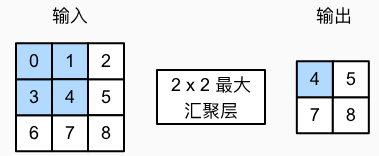
作用：
- 提取出指定窗口的特征（最大）数据，显著减少了特征图（特征张量的大小）——主要作用。
- 由于最大池化能提取出特定窗口的最大数据，无论这个数据在窗口中的原始位置在哪，所以最大池化也缓解了对所要识别特征的位置敏感性。
函数：
torch.nn.MaxPool2d(kernel_size, stride=None, padding=0, dilation=1,return_indices=False, ceil_mode=False)
-
kernel_size ：表示做最大池化的窗口大小，可以是单个值，也可以是tuple元组
-
stride ：步长，可以是单个值，也可以是tuple元组
-
padding ：填充，可以是单个值，也可以是tuple元组
-
dilation ：控制窗口中元素步幅
-
return_indices ：布尔类型，返回最大值位置索引
-
ceil_mode ：布尔类型，为True，用向上取整的方法，计算输出形状；默认是向下取整
步长填充等与卷积一致
平均汇聚
顾名思义，与最大汇聚的区别在于其取平均值
torch.nn.AvgPool2d(kernel_size, stride=None, padding=0, ceil_mode=False, count_include_pad=True, divisor_override=None)
-
kernel_size：池化核的尺寸大小，可以是单个值，也可以是tuple元组
-
stride：窗口的移动步幅，默认与kernel_size大小一致，可以是单个值，也可以是tuple元组
-
padding：在两侧的零填充宽度大小，可以是单个值，也可以是tuple元组
-
ceil_mode：设为True时，在计算输出形状的过程中采用向上取整的操作，否则，采用向下取整
-
count_include_pad：布尔类型，当为True时，将在平均池化计算中包括零填充，否则，不包括零填充
-
divisor_override：如果被指定，则除数会被代替成divisor_override。换句话说，如果不指定该变量，则平均池化的计算过程其实是在一个池化核内，将元素相加再除以池化核的大小，也就是divisor_override默认为池化核的高×宽；如果该变量被指定，则池化过程为将池化核内元素相加再除以divisor_override。
步长填充等与卷积一致
全局平均池化
1 | torch.nn.AdaptiveAvgPool2d(output_size) |
功能：该函数与二维平均池化运算类似，区别主要体现在自适应上，对于任何输入大小，输出大小均为指定的H×W大小。
现代卷积神经网络
- AlexNet。它是第一个在大规模视觉竞赛中击败传统计算机视觉模型的大型神经网络；
- 使用重复块的网络（VGG）。它利用许多重复的神经网络块；
- 网络中的网络（NiN）。它重复使用由卷积层和1×1卷积层（用来代替全连接层）来构建深层网络;
- 含并行连结的网络（GoogLeNet）。它使用并行连结的网络，通过不同窗口大小的卷积层和最大汇聚层来并行抽取信息；
- 残差网络（ResNet）。它通过残差块构建跨层的数据通道，是计算机视觉中最流行的体系架构；
- 稠密连接网络（DenseNet）。它的计算成本很高，但给我们带来了更好的效果。
附录
全连接层在nn.Flatten()之后，tensor的shape为(n,通道数x高x宽)。用了全连接层，可能会完全放弃表征的空间结构。